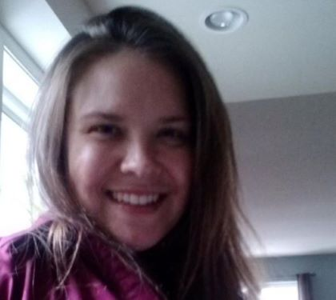

About Me

My background is in youth programming, most recently as a STEM (Science, Technology, Engineering, and Math) program specialist. I didn't have much of a STEM background when I started four years ago, but I've always liked trying to figure out how things worked. Coding seems to be a great way to put that into practice.
In other news, I like traveling, National Parks, outdoor activities, and working in my own mini makerspace. Working on a goal with a friend to run a race in every state. When we can make time for it! We've completed state 25 (New York) as of this writing!